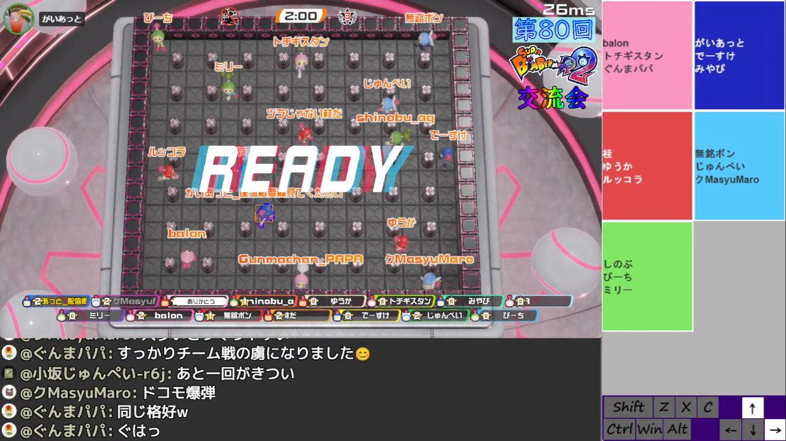
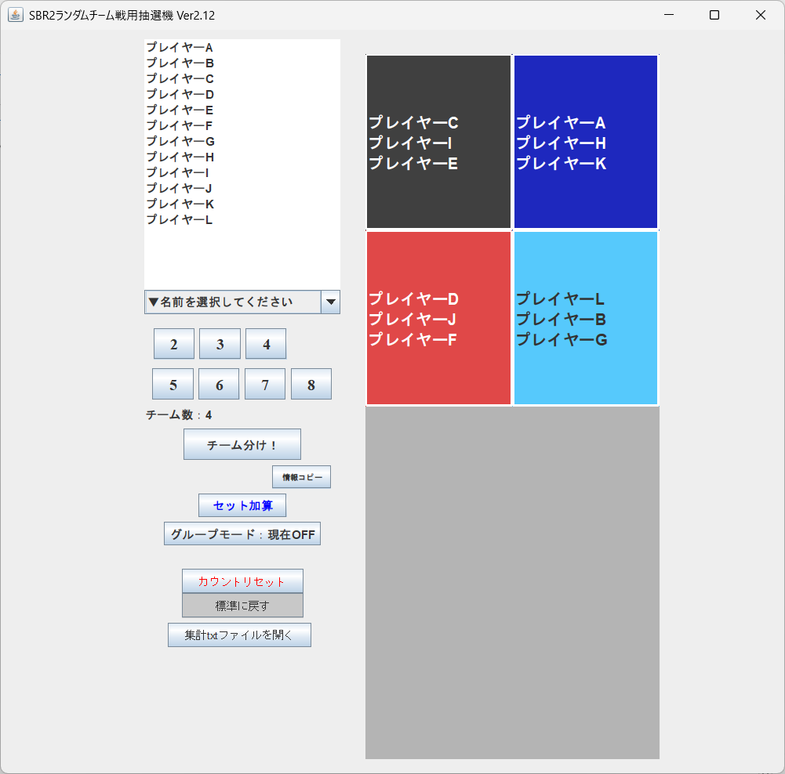

SBR2交流会ルール


実際の交流会の配信画面はこのような形になっています。 チーム分けツールの結果が、配信画面右側に表示されますので、 あなたの名前の背景色となっている色のボンバー8兄弟を選択してください。
基本ルール
- ステージ
- ギンギンパワー
- ラウンド数
- 可変
- タイム
- 2分
- みそボン
- なし
- 特殊能力
- なし
- プレッシャーブロック
- あり
- 場外攻撃
- 自由
参加方法
- 告知している日時に、主催者のYouTubeチャンネルにて交流会配信を行います。
- 参加したい方は、配信中の案内に従ってルームへ入室してください。
- 初参加の方も歓迎していますので、お気軽にご参加ください。
ルーム参加について
- ルームに入室する際は、配信画面やチャットの案内をご確認ください。
- YouTubeのチャットコメントがない方には、配信画面を見ているか確認する場合があります。
- 確認が取れない場合、チーム戦の都合上、観戦者とさせていただく場合があります。
キャラ選択
- 配信画面右側に映っているチーム分けツールの結果で、自分の名前の背景色を確認してください。
- 自分の名前の背景色と同じ色のボンバー8兄弟を選択してください。
- 誤って別の色を選択してしまった場合は、配信内の案内に従ってください。
途中参加・途中退出
- 途中参加・途中退出は自由です。
- 参加人数の変動により、チーム人数に差が出る場合があります。
- 退室する場合も、リアルの都合を優先して問題ありません。
禁止事項
- 暴言、誹謗中傷、過度な煽り行為など、他の参加者が不快に感じる行為は禁止です。
- 個人戦ではなくチーム戦ですので、味方や他の参加者への配慮を忘れずにお願いします。
- ルールや運営の案内に従っていただけない場合、参加をお断りする場合があります。
開催日時について
- 開催日時は主催者X（Twitter）やDiscordサーバーをご確認ください。